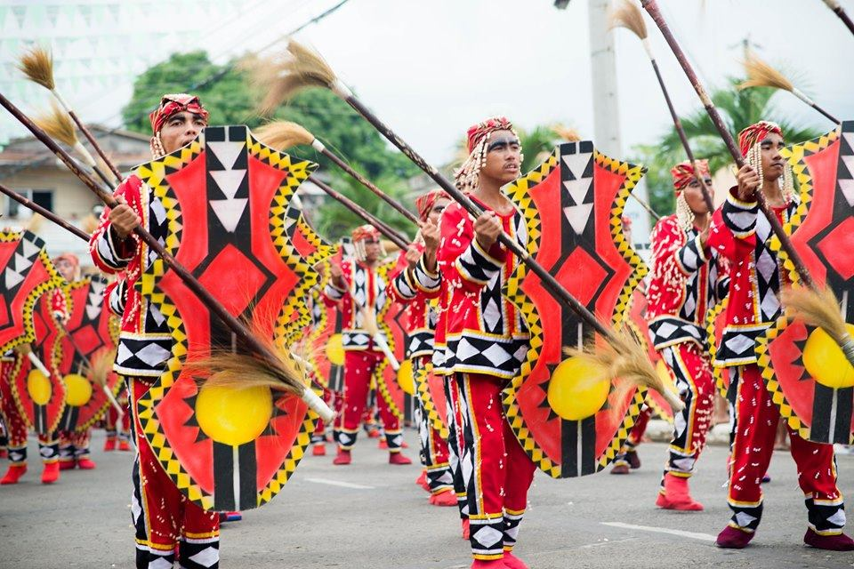
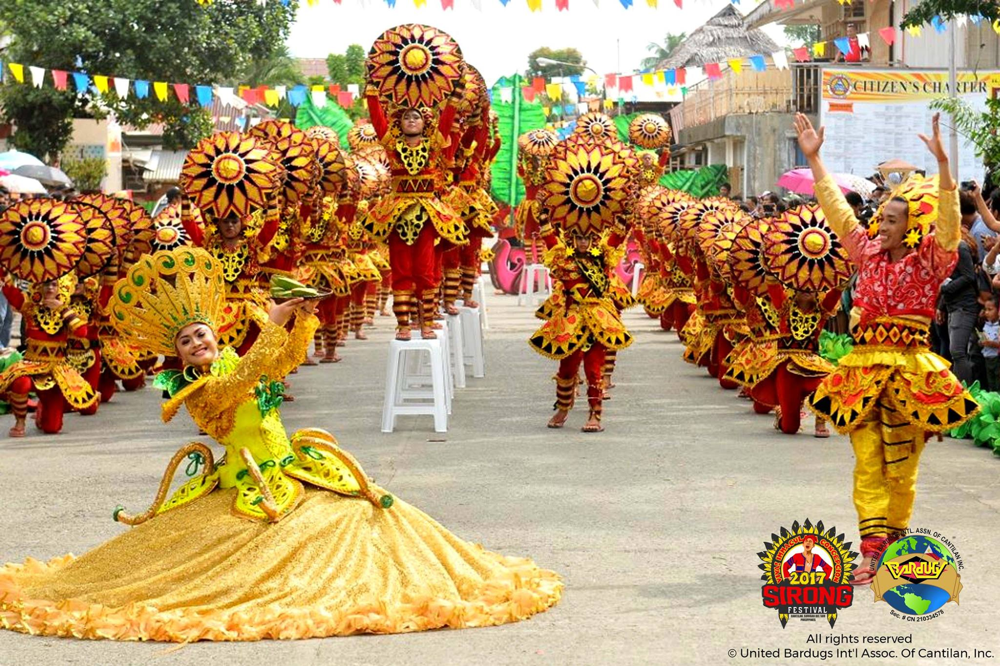
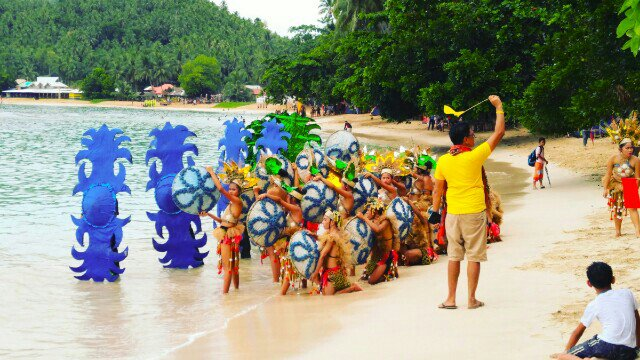
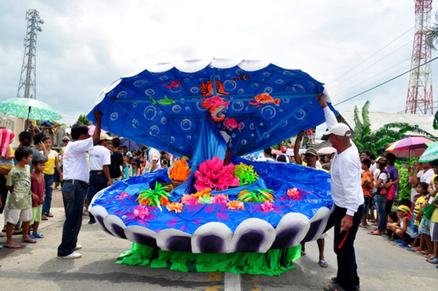

Surigao Del Sur is alive with vibrant festivals that celebrate its rich culture, indigenous heritage, and deep faith. Each municipality holds its own unique celebration that showcases the spirit of its people through music, dance, and tradition.

Ka'liga Tu Sur is the grand convergence of all local festivals from the 17 municipalities and 2 cities of Surigao del Sur, held every June 19 to mark the province's founding anniversary. The name comes from a Lumad term meaning "gathering of tribes to give thanks." It features a spectacular showcase of indigenous dances, rituals, songs, and live music from across the province.
Another festival worth celebrating!

The Sirong Festival of Cantilan is a dramatic war dance festival depicting the early Christianization of the first Cantilangnons, who were Manobo and Mamanwa peoples. It portrays how the native people defended their land against Muslim invaders, featuring the traditional martial art of Escrima (Arnis) and the sacred chant known as Alabacion. It is one of the most historically rich festivals in the province.
Discover another lively celebration!

The Kaliguan Festival is a beach-themed celebration held in the municipality of Cagwait, timed with the feast of their patron saint. The event highlights the town's pride in its beautiful white sand beach and ocean heritage, featuring street dancing, cultural performances, and a festive agro-industrial fair that draws visitors from nearby towns and cities.
One more festival you should not miss!

The Kadagatan Festival is celebrated in the municipality of Cortes, derived from the Visayan word for "sea." It honors the town's deep connection to the ocean and its unique attraction, the Laswitan Falls and Lagoon. The festival features colorful street dancing, beauty pageants, and cultural performances that highlight the coastal heritage of the Cortehanon people.